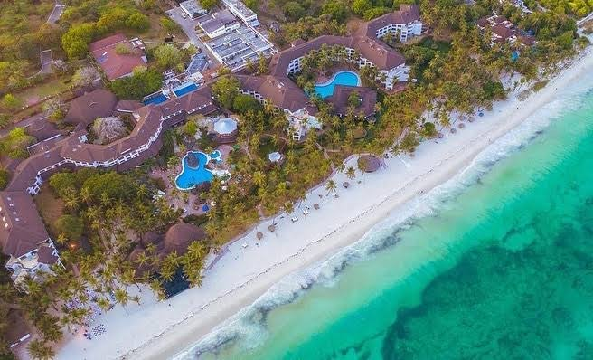
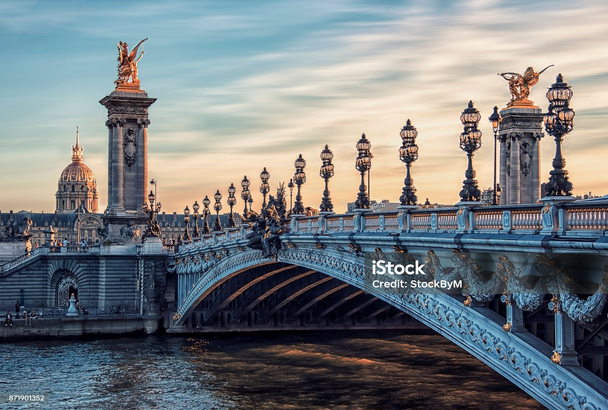

THE SNIP OF KNOWLEDGE TO YOUR FAVOURITE DESTINATIONS
Diani

Diani, nestled along the pristine coastline of Kenya, stands as a captivating tourism site that beckons travelers from
both the local and global arenas. Its expansive, palm-fringed white-sand beaches, lapped by the azure waters of the
Indian Ocean, create a postcard-perfect setting that defines tropical paradise. Diani offers a plethora of water
activities, from snorkeling over vibrant coral reefs to thrilling kite surfing adventures, ensuring an adrenaline-packed
experience for adventure seekers. The enchanting Shimba Hills National Reserve, just a short distance away, adds a touch
of wildlife exploration to the coastal charm, where majestic elephants roam freely. Diani's vibrant local culture,
reflected in the bustling markets and warm hospitality, provides an authentic Kenyan experience. The area is dotted with
luxury resorts, boutique hotels, and eco-friendly lodges, offering a diverse range of accommodations catering to various
preferences. With its breathtaking natural beauty, rich cultural offerings, and a myriad of recreational options, Diani
epitomizes the allure of Kenyan tourism, making it an irresistible destination for travelers seeking sun-soaked beaches,
adventure, and a genuine taste of coastal life.
Read more...
12/09/2023
Paris
In the heart of the enchanting city of Paris, the epitome of luxury is found in its exquisite hotels that boast unparalleled
views of iconic landmarks. Imagine waking up to the Eiffel Tower gracefully dominating the skyline,
its intricate lattice of iron illuminated by the first rays of the sun. Perched in a luxurious suite,
the opulent interiors complement the majestic panorama outside the window. The Seine River, a ribbon of tranquility,
winds its way through the city, providing a picturesque scene from the comfort of your lavish abode.
Gazing out from your exclusive perch, the Louvre Museum and its timeless architecture unfold before your eyes,
inviting you to explore its treasures. The play of light on the historic buildings and bridges,
combined with the charm of Parisian rooftops, creates a visual symphony that captivates the soul.
As night falls, the city of lights truly comes alive, and from your privileged position,
the twinkling Parisian skyline becomes a spectacle that mirrors the sophistication and grandeur of this
extraordinary city. A stay in these luxurious havens is not just an accommodation; it's an immersive experience,
where the beauty of Paris is framed by the lavishness within.
Read more...12/09/2023

Dubai

Dubai, a jewel in the desert, stands as a global beacon of cultural dynamism, captivating travelers with a unique blend
of tradition and modernity. The city's skyline, adorned with futuristic skyscrapers like the Burj Khalifa, narrates a
tale of contemporary ambition and architectural marvels. Beneath the glittering façade, Dubai embraces its rich heritage,
evident in the bustling spice and gold souks where the aromas of exotic spices and the glint of precious metals create a
sensory feast. The Dubai Mall, not just a shopping haven, but a cultural hub, houses attractions like the Dubai Aquarium
and Underwater Zoo, seamlessly combining leisure with educational experiences. Traditional Emirati artistry finds
expression in the Al Fahidi Historic District, where wind-tower architecture and museums offer glimpses into Dubai's past.
The Dubai Opera, a cultural masterpiece, hosts a variety of performances, from ballet to opera, embodying the city's
commitment to the arts. The annual Dubai Shopping Festival and the Dubai Food Festival showcase the city's cosmopolitan
spirit, offering a global array of products and cuisines. With its embrace of diverse influences and a commitment to
preserving its roots, Dubai stands as an unparalleled cultural crossroads, inviting travelers to embark on a journey that
seamlessly weaves the past, present, and future.
Read more...12/09/2023